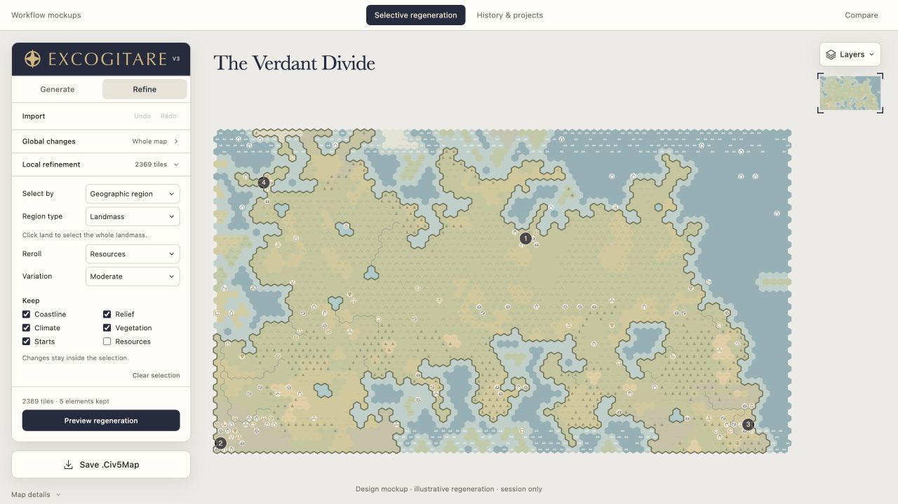
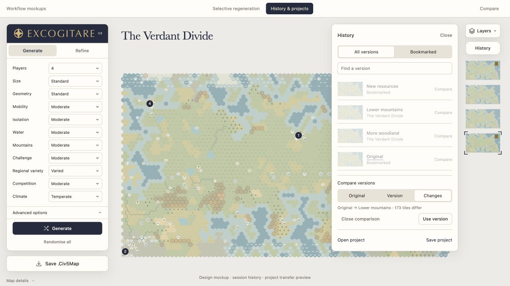

Selective regeneration
Choose what changes and what stays, within the selected region.

Open regeneration mockupTwo proposed additions to the approved Generate and Refine interface.
Choose what changes and what stays, within the selected region.

Open regeneration mockupFind bookmarked versions, compare changes and preview project transfer.

Open history mockup